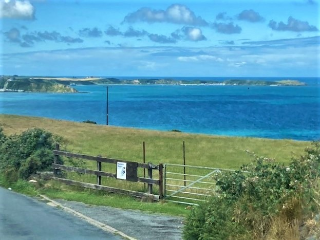
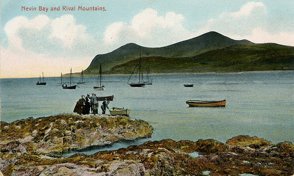
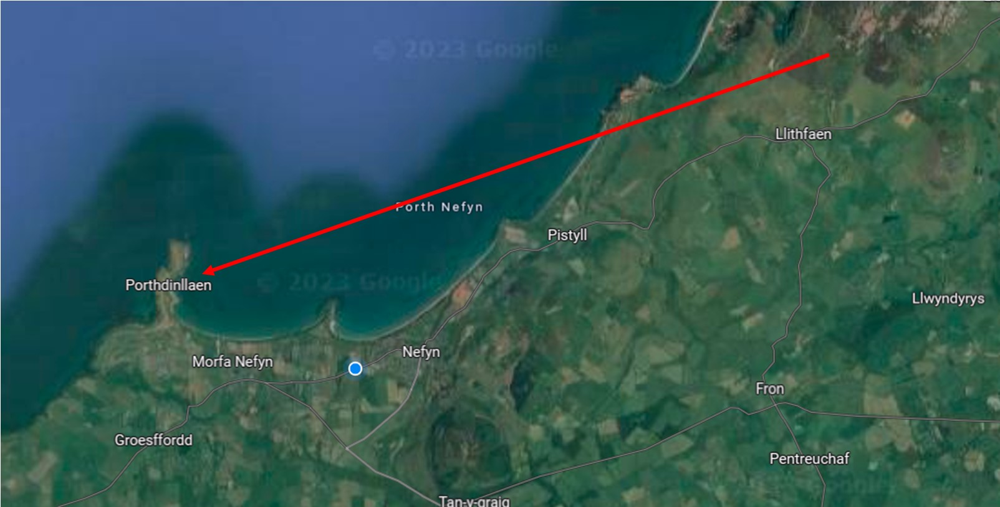

Porthdinllaen und die Turnpike-Straße Your browser does not support the audio element. Porthdinllaen from Bistyll Postcard from Borthdinllaen 1908 Map showing the location of Porthdinllaen from the slopes of The Eifl